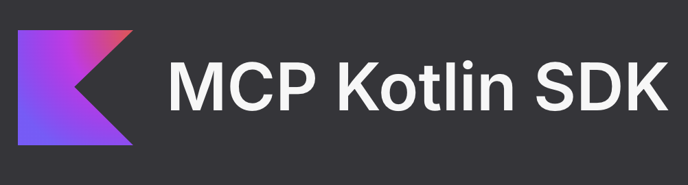

A Model Context Protocol server written in Kotlin that exposes miejski.bike data — Polish public bike-share zones, racks, and POI types — as tools any MCP client (e.g. Claude) can call.
A self-contained MCP server that communicates over stdio and is distributed as a fat JAR. It wraps the miejski.bike REST API behind three simple MCP tools, letting AI agents query bike-sharing infrastructure in Polish cities without writing HTTP clients.

Returns all available miejski.bike zones — city/area IDs and display names. No arguments needed.
Returns POI types available within a given zone. Takes a zoneId string like poznan, warszawa, or wroclaw.
Returns up to 10 bike rack points (name + GPS coordinates) for a given zone. Filtered by type and limited server-side.
A single main.kt (~240 lines) wires up an MCP Server, registers three tools, and connects over stdio. Each tool delegates to a suspend function that calls the miejski.bike REST API via Ktor's CIO client.
// Request flow
Client (e.g. Claude) → stdio MCP → Server.addTool { }
→ fetchFromApi("api", "v1", ...)
→ Ktor CIO HTTP client
→ kotlinx.serialization JSON
→ CallToolResult back to client
modelcontextprotocol/kotlin-sdk, exposes capabilities with tools/listChanged = true.@Serializable DTOs (DTOBikePoint, DTOZone, DTOPoiType) map the REST API response shape; domain types (BikePoint, BikeZone, BikeZoneType) are returned to the client.Produces a self-contained fat JAR at build/libs/003-kotlin-mcp-1.0-SNAPSHOT-all.jar.
Requires MIEJSKI_BIKE_API_TOKEN env var. Speaks MCP over stdio — not interactive.
# Register with Claude
claude mcp add --scope user --transport stdio miejski-bike \
-e MIEJSKI_BIKE_API_TOKEN=<your-token> \
-- java -jar "$(pwd)/build/libs/003-kotlin-mcp-1.0-SNAPSHOT-all.jar"
| Env variable | Description |
|---|---|
| MIEJSKI_BIKE_API_TOKEN | Bearer token for the miejski.bike REST API |